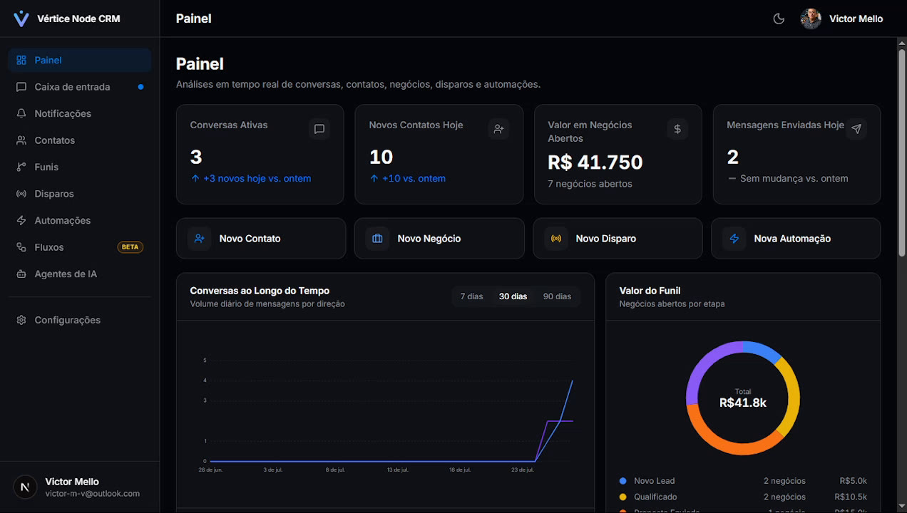
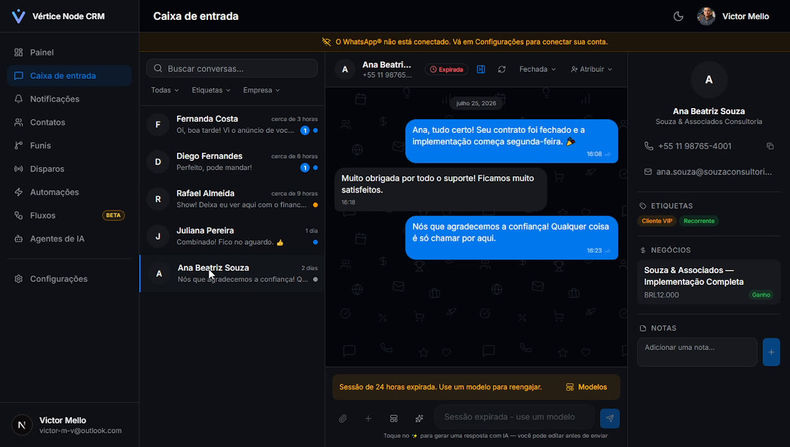
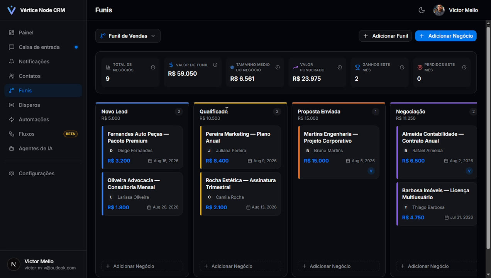
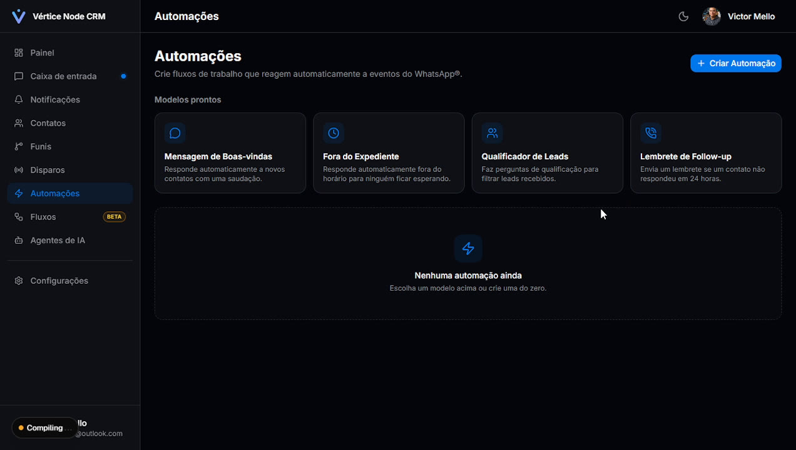

📵
Um número, um celular, uma pessoa
Se quem cuida do WhatsApp falta ou troca de aparelho, o atendimento para junto com ela.
Caixa de entrada compartilhada, funil de vendas, automações e chatbot — sua equipe atende junto, sem depender do celular de uma pessoa só e sem perder nenhum lead no meio do caminho.
Sinais de que sua empresa já passou do ponto do WhatsApp pessoal.
Se quem cuida do WhatsApp falta ou troca de aparelho, o atendimento para junto com ela.
Sem funil e sem histórico organizado, é fácil esquecer de responder — e o cliente já foi para o concorrente.
Quantas conversas estão abertas? Quanto tem no funil? Sem um painel, essas respostas moram só na cabeça de alguém.
Telas reais do sistema — é exatamente isso que sua equipe vai usar no dia a dia.

Conversas ativas, novos contatos, valor em negócios abertos e volume de mensagens — tudo em uma tela, sem precisar perguntar para ninguém.

Toda a equipe vê e responde as mesmas conversas, com histórico completo, etiquetas, notas internas e o negócio vinculado ao contato.

Arraste os negócios entre as etapas e acompanhe valor total, ticket médio e ganhos do mês — sem depender de planilha.

Boas-vindas automática, resposta fora do expediente, qualificação de leads e lembrete de follow-up — ativa em poucos cliques, sem programar nada.
Construtor visual para menus, FAQ e captura de leads — o cliente interage direto pelo WhatsApp.
Assistente que sugere ou envia respostas automáticas com base no contexto do seu negócio, com transferência para um humano quando precisar.
Segmente por etiqueta, empresa ou campo personalizado — CNPJ, plano, o que o seu negócio precisar guardar.
Além da API oficial da Meta, o sistema também se conecta por um método alternativo, sem tarifa por conversa.
A API oficial da Meta tem seu lugar, mas cobra por conversa e exige verificação de empresa. Por isso o CRM também aceita uma conexão alternativa.
Um processo simples, acompanhado do início ao fim.
Conversa no WhatsApp para entender seu volume de atendimento, sua equipe e o que você mais precisa resolver.
Deixamos o CRM com a cara da sua marca, importamos seus contatos e montamos o funil do seu jeito.
Mostramos cada tela ao vivo para o seu time começar a usar no mesmo dia, sem enrolação.
Acompanhamos o uso, ajustamos automações e evoluímos o sistema junto com o seu negócio.
Não necessariamente. Além da API oficial, o sistema também se conecta por um método alternativo, sem tarifa por conversa cobrada pela Meta — ótimo para quem está começando.
Sim. A caixa de entrada é compartilhada: todos os atendentes veem as mesmas conversas, podem atribuir um colega e recebem notificação quando uma conversa é direcionada para eles.
Sim, a importação de contatos faz parte da etapa de configuração inicial, junto com a organização por etiquetas e campos personalizados.
Sim, o painel roda no navegador e se adapta a celular, tablet e computador — sem precisar instalar nada.
Depende do tamanho da equipe e da migração de contatos, mas o processo é acompanhado do diagnóstico ao treinamento — sem deixar você sozinho na configuração.
Preencha o formulário ou chame direto no WhatsApp. Respondemos em até 24h com os próximos passos para colocar o CRM no ar.